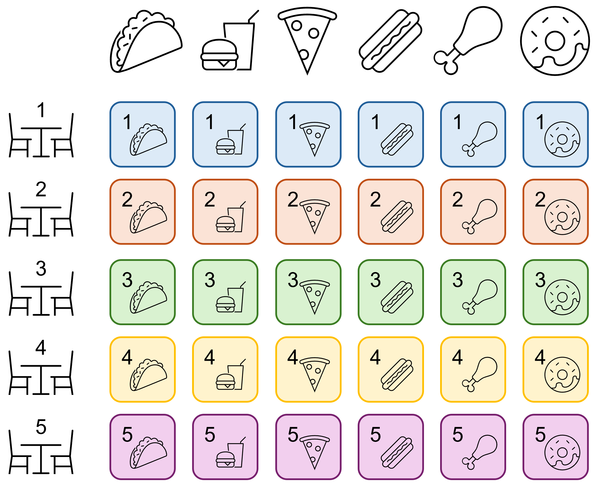
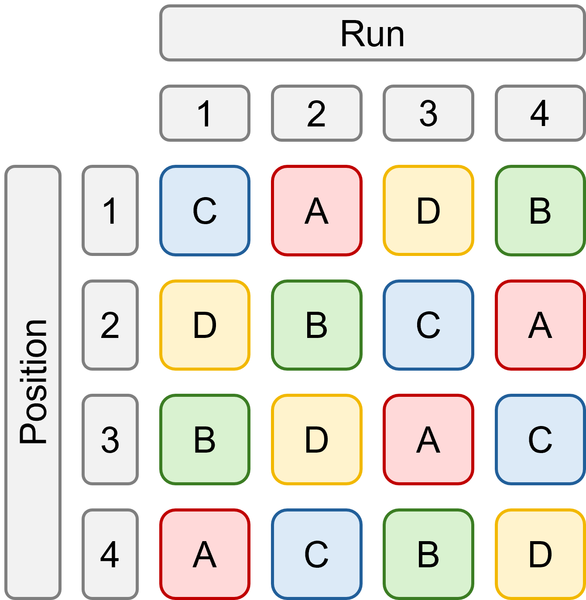
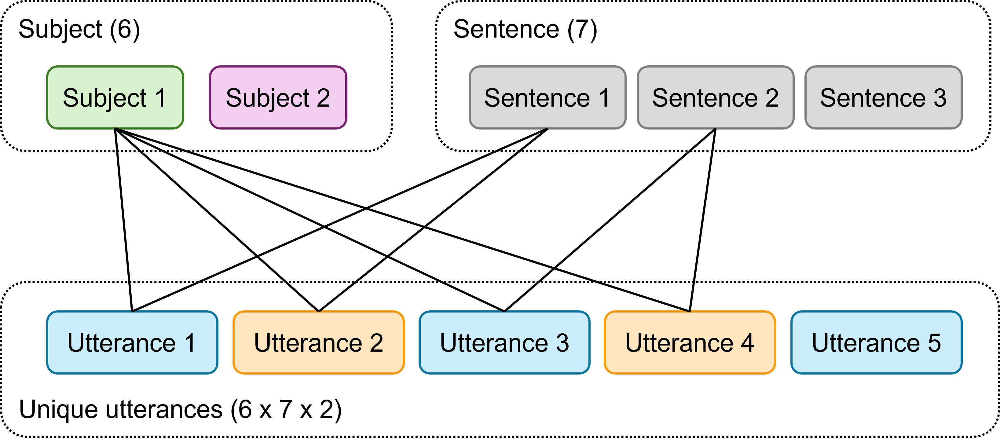
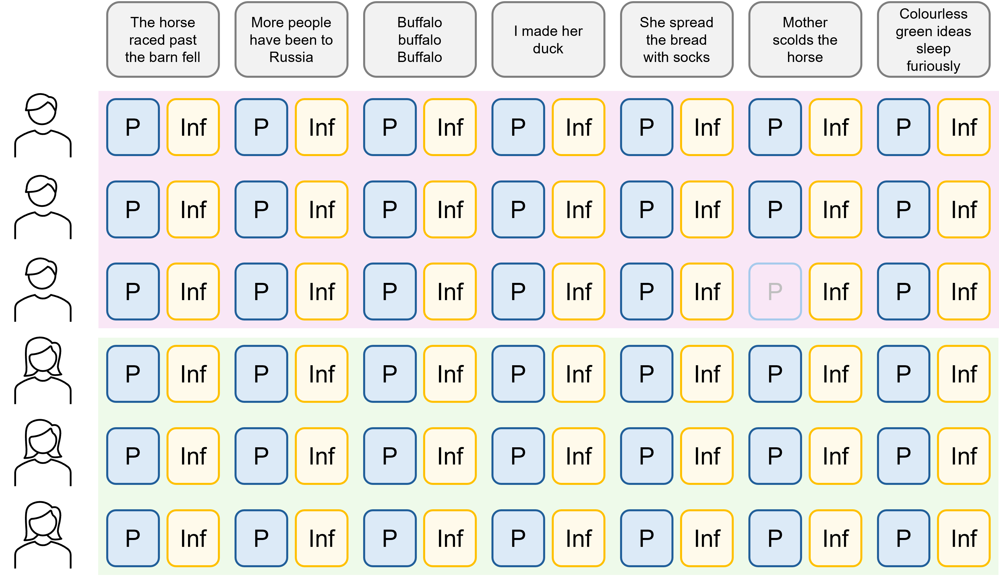

The previous section of course materials discussed how to fit random effects in lme4 when there are multiple clustering variables within the dataset/experimental design, with a focus on nested random effects.
This section similarly explains how to determine the random effects structure for more complex experimental designs, but deals with the situations where the clustering variables are not nested.
9.1 What are crossed random effects?
We describe two clustering variables as “crossed” if they can be combined in different ways to generate unique groupings, but one of them doesn’t “nest” inside the other.
This concept is similar to the idea of a “factorial” design in regular linear modelling.
9.1.1 Fast food example
For instance, imagine a fast food franchise is looking to perform quality control checks across different branches. In 5 randomly selected branches, testers sample 6 different items of food from the menu. They sample the same 6 items in each branch, randomly selected from the wider menu.
Here, both branch and menu item would be considered random effects, but one is not nested within the other. In this situation, item A in branch 1 and item A in branch 2 are not unconnected or unique; they are the same menu item. We would want to estimate a set of 6 random intercepts/slopes for branch, and separately, 5 random intercepts/slopes for menu item.

Branch and item as crossed effects
A useful rule of thumb is that if the best way to draw out your experimental design is with a table or grid like this, rather than a tree-shaped diagram, then your effects are likely to be crossed rather than nested.
9.2 Fitting crossed random effects
Implementing crossed random effects in your lme4 model is very easy. You don’t need to worry about additional syntax or explicit nesting.
We’ll use a behavioural dataset from a cognitive psychology study, where the classic Stroop task was administered, as a test case.
9.2.1 The Stroop dataset
In the Stroop task, participants are asked to identify the colour of font that a word is written in. The words themselves, however, are the names of different colours. Typically, when the font colour does not match the word itself, people are slower to identify the font colour.
Rows: 432 Columns: 4
── Column specification ────────────────────────────────────────────────────────
Delimiter: ","
chr (2): subject, congruency
dbl (2): item, reaction_time
ℹ Use `spec()` to retrieve the full column specification for this data.
ℹ Specify the column types or set `show_col_types = FALSE` to quiet this message.
This dataset contains four variables:
subject, of which there are 12
item, referring to task item, of which there are 36 in total
congruency, whether the colour of the font matched the word or not (congruent vs incongruent)
reaction_time, how long it took the participant to give a response (ms)
Of the 36 items, 18 are congruent, and 18 are incongruent. Each subject in the study saw and responded to all 36 items, in a randomised (counterbalanced) order.
Our fixed predictor is congruency, and we can treat both subject and item as clustering variables that create non-independent clusters amongst the 432 total observations of reaction_time. We also consider that the reaction time change between congruent/incongruent tasks may differ across participants (i.e. we fit random slopes at the participant level).
Linear mixed model fit by REML. t-tests use Satterthwaite's method [
lmerModLmerTest]
Formula: reaction_time ~ congruency + (1 | item) + (1 + congruency | subject)
Data: cognitive
REML criterion at convergence: 4041.3
Scaled residuals:
Min 1Q Median 3Q Max
-3.4839 -0.6472 0.0008 0.5949 3.2836
Random effects:
Groups Name Variance Std.Dev. Corr
item (Intercept) 42.2 6.496
subject (Intercept) 140.4 11.847
congruencyincongruent 159.4 12.626 -0.68
Residual 609.9 24.696
Number of obs: 432, groups: item, 36; subject, 12
Fixed effects:
Estimate Std. Error df t value Pr(>|t|)
(Intercept) 247.995 4.107 14.240 60.39 < 2e-16 ***
congruencyincongruent 58.222 4.860 15.581 11.98 2.87e-09 ***
---
Signif. codes: 0 '***' 0.001 '**' 0.01 '*' 0.05 '.' 0.1 ' ' 1
Correlation of Fixed Effects:
(Intr)
cngrncyncng -0.686
In this model, we’ve included a fixed effect of congruency, as well as three random effects:
random intercepts for item
random intercepts for subject
random slopes for congruency on subject
We do not fit random slopes for congruency on item, as congruency does not vary within individual task items.
Crucially, item is not nested within subject. Item 4 for subject A is exactly the same as item 4 for subject E - we haven’t given each subject their own set of items. You can see from the model output that we have therefore fitted 12 random intercepts/slopes for subject, and 36 random intercepts for item.
This allows us to capture the fixed relationship between congruency and reaction_time, with both subject and item accounted for.
9.3 Partially crossed random effects
In the example above, each participant in the study experienced each of the task items. We’d call this a fully-crossed design (or perhaps, a full factorial design). But, if each participant had only responded to a randomised subset of the task items, then we would instead say that the item and subject random effects are partially crossed.
Partially crossed designs are common in research, such as when using the classic Latin square design, which we’ll elaborate on with the next example.
Rows: 16 Columns: 4
── Column specification ────────────────────────────────────────────────────────
Delimiter: ","
chr (1): material
dbl (3): run, position, wear
ℹ Use `spec()` to retrieve the full column specification for this data.
ℹ Specify the column types or set `show_col_types = FALSE` to quiet this message.
In this experiment, four different types of material are being tested (A, B, C and D) for their wear, by feeding them into a wear-testing machine.
The machine could process four material samples at a time in each run, and it’s believed that there are differences between runs. There is also evidence that the position within the machine might also generate some differences in wear. Therefore, four runs were made in total, with each material placed at each different position across the run. For each of the 16 samples, the response variable wear is assessed by measuring the loss of weight in 0.1mm of material over the testing period.
On first read, it might sound as if position and run are somehow nested effects, but actually, they represent a Latin square design:

Latin square design of abrasion experiment
A Latin square is a particular type of randomised design, in which each experimental condition (in this case, materials A through D) appear once and only once in each column and row of the design matrix. This sort of randomisation might be used to randomise the layout of plants in greenhouses, or samples in wells on plates.
In the abrasion example, this design matrix is actually stored within the structure of the dataset itself. You can reconstruct it by looking at the raw data, or by using the following code:
[,1] [,2] [,3] [,4]
[1,] "C" "A" "D" "B"
[2,] "D" "B" "C" "A"
[3,] "B" "D" "A" "C"
[4,] "A" "C" "B" "D"
The four possible positions are the same across each run, meaning that position is not nested within run, but is instead crossed. Position 1 in run 1 is linked to position 1 in run 3, for instance - we wouldn’t consider these to be “unique” positions, but would like to group them together when estimating variance in our model.
But, because it’s impossible for each material to experience each position in each run, this is a partially crossed design rather than a fully crossed one.
9.3.2 Fitting partially crossed random effects
The good news is that fitting this in lme4 doesn’t require any extra knowledge or special syntax. So long as the dataset is properly coded and accurately represents the structure of the experimental design, the code is identical to fully crossed random effects.
lme_abrasion <-lmer(wear ~ material + (1|run) + (1|position), data = abrasion)summary(lme_abrasion)
Linear mixed model fit by REML. t-tests use Satterthwaite's method [
lmerModLmerTest]
Formula: wear ~ material + (1 | run) + (1 | position)
Data: abrasion
REML criterion at convergence: 100.3
Scaled residuals:
Min 1Q Median 3Q Max
-1.08973 -0.30231 0.02697 0.42254 1.21052
Random effects:
Groups Name Variance Std.Dev.
run (Intercept) 66.90 8.179
position (Intercept) 107.06 10.347
Residual 61.25 7.826
Number of obs: 16, groups: run, 4; position, 4
Fixed effects:
Estimate Std. Error df t value Pr(>|t|)
(Intercept) 265.750 7.668 7.475 34.656 1.57e-09 ***
materialB -45.750 5.534 6.000 -8.267 0.000169 ***
materialC -24.000 5.534 6.000 -4.337 0.004892 **
materialD -35.250 5.534 6.000 -6.370 0.000703 ***
---
Signif. codes: 0 '***' 0.001 '**' 0.01 '*' 0.05 '.' 0.1 ' ' 1
Correlation of Fixed Effects:
(Intr) matrlB matrlC
materialB -0.361
materialC -0.361 0.500
materialD -0.361 0.500 0.500
If you check the output, you can see that we do indeed have 4 groups each for run and position, which is correct. The model has done what we intended, and we could now go on to look at the differences between material, with the nuisance effects of run and position having been accounted for.
9.4 Exercises
9.4.1 Penicillin
Exercise
Level:
For this exercise, we’ll use the internal Penicillin dataset from lme4.
These data are taken from a study that assessed the concentration of a penicillin solution, by measuring how it inhibits the growth of organisms on a plate of agar.
Six samples of the penicillin solution were taken. On each plate of agar, a few droplets of each of the six samples were allowed to diffuse into the medium. The diameter of the inhibition zones created could be measured, and is related in a known way to the concentration of the penicillin.
There are three variables:
sample, the penicillin sample (A through F, 6 total)
plate, the assay plate (a through x, 24 total)
diameter, of the zone of inhibition (measured in mm)
This is quite a simple dataset, in that there are only two variables besides the response. But, given the research question, we likely want to consider both of these two variables as random effects.
How does that work? This is the first random-effects-only model that we’ve come across. (Well, technically there are still fixed effects - every time you estimate a random effect, a fixed effect will always be estimated as part of that.)
Consider the experimental design
We have two variables for which we’d like to estimate random effects, and with no explicit fixed predictors, all that’s available to us is random intercepts.
The two variables, plate and sample, are crossed in a factorial design (each of the six samples is included on each of the 24 plates). So, we want to fit these as crossed random effects.
lme_penicillin <-lmer(diameter ~ (1|sample) + (1|plate), data = Penicillin)summary(lme_penicillin)
Linear mixed model fit by REML. t-tests use Satterthwaite's method [
lmerModLmerTest]
Formula: diameter ~ (1 | sample) + (1 | plate)
Data: Penicillin
REML criterion at convergence: 330.9
Scaled residuals:
Min 1Q Median 3Q Max
-2.07923 -0.67140 0.06292 0.58377 2.97959
Random effects:
Groups Name Variance Std.Dev.
plate (Intercept) 0.7169 0.8467
sample (Intercept) 3.7311 1.9316
Residual 0.3024 0.5499
Number of obs: 144, groups: plate, 24; sample, 6
Fixed effects:
Estimate Std. Error df t value Pr(>|t|)
(Intercept) 22.9722 0.8086 5.4866 28.41 3.62e-07 ***
---
Signif. codes: 0 '***' 0.001 '**' 0.01 '*' 0.05 '.' 0.1 ' ' 1
This shows us that the average diameter of the inhibition zone is around 23mm. Looking at the random effects, there’s more variance due to sample than there is to plate.
Visualise the model
We can see these different variances by visualising the model. Here, a jagged line of best fit is drawn for each of the samples; the overall shape of the lines are the same, since we have random intercepts only. You can see that the spread within each of the lines (which represents variance for plate) is overall less than the spread of the lines themselves (which represents the variance for sample).
The study was designed to investigate whether voice pitch is higher in polite contexts than in informal ones, and whether this effect is consistent between male and female speakers.
There are five variables in this dataset:
subject, the participant (6 total)
gender, treated here as a binary categorical variable (male vs female)
sentence, the sentence that was spoken (7 total)
context, whether the speaker was in a polite or informal setting
pitch, the measured voice pitch across the sentence
Each participant in the study spoke each of the seven sentences twice, once in each of the two contexts.
Is there a difference between vocal pitch in different contexts? Is this effect consistent for male and female speakers?
To answer this question:
Consider which variables you want to treat as fixed and random effects
Try drawing out the structure of the dataset, and think about what levels the different variables are varying at
You may want to assess the quality and significance of the model to help you draw your final conclusions
Worked answer
Consider the experimental design
In this dataset, there are two variables for which we might want to fit random effects: subject and sentence. The particular sets of participants and sentences have been chosen at random from the larger population of participants/speakers and possible sentences that exist.
The other two variables, gender and context, are fixed effects of interest.
Let’s sketch out the design of this experiment. You could choose to visualise/sketch out this design in a couple of ways:

Experimental design for voice pitch experiment #1

Experimental design for voice pitch experiment #2
The subject and sentence variables are not nested within one another - they’re crossed. There are 42 combinations of subject and sentence.
Each of those combinations then happens twice: once for each context, for a total of 84 possible unique utterances. (Note that there is actually one instance of missing data, so we only have 83.)
Now, context varies within both subject and sentence - because each subject-sentence combination is spoken twice. But gender does not vary within subject in this instance; each participant is labelled as either male or female.
Fit a full model
So, the full possible model we could fit is the following:
Fitting a simpler model that contains only random intercepts, and comparing this to our more complicated model, shows no difference between the two - i.e., the simpler model is better.
You can keep comparing different models with different random effects structures, if you like, for practice - this dataset is a good sandbox for it!
Check assumptions
For now, we’re going to quickly check the assumptions of this simpler, intercepts-only model:
Not bad! Maybe one overly influential point (31) that deserves testing - you can try refitting the model without it, and seeing whether that changes the overall conclusions. The Q-Q plot veers off a tiny bit on the right hand side, but it’s only really 3 residuals, so probably not worth worrying about.
The random intercepts look nicely normally distributed, and the posterior predictive check is quite convincing.
Based on the model output and the visualisation, we might therefore conclude that on average, speakers do use higher pitch for polite sentences compared to informal ones. Although there is a difference in pitch between male and female speakers overall, the effect of context is similar across genders.
In the final line of code for the plot, we’ve included the lines of best fit for each subject-sentence combination, which have fixed gradients but random intercepts. You can view sentence-wise lines of best fit (summarised across all 6 subjects) by writing group = sentence, or subject-wise lines of best fit (summarised across all 7 sentences) by writing group = subject. These tell you a little bit more about how much variation there is between the subjects and sentences.
9.5 Summary
This section has addressed how to fit models with multiple clustering variables, in scenarios where those clustering variables are not nested with one another.
This, along with the previous section on nested random effects, helps to extend the basic linear mixed effects model that was introduced earlier in the course. It emphasises the need to understand your variables and experimental design, in order to fit a suitable model.
Key points
Two random effects are “crossed” if they interact to create multiple unique groups/combinations (as we see in factorial experimental designs), and are not nested
Random effects can be fully or partially crossed
Crossed random effects are fitted in lme4 by creating multiple distinct random effects structures within the model formula